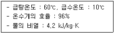
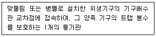
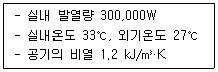
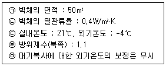
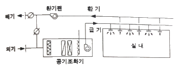
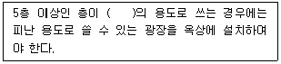

건축설비산업기사 (2020-08-22 기출문제)
1과목: 건축일반
1. 호텔의 동선계획에 관한 설명으로 옳지 않은 것은?
- 고객동선과 서비스 동선은 분리시킨다.
- 숙박고객과 연회고객의 출입구는 분리시킨다.
- 고객동선은 명료하고 단순해야 한다.
- 숙박고객은 프런트를 거치지 않고 직접 주차장으로 가도록 한다.
(정답률: 86%)

2. 음환경에서 정의하는 음압(sound pressure)의 단위로 옳은 것은?
- 폰(phon)
- 데시벨(dB)
- 주파수(Hz)
- 손(sone)
(정답률: 80%)
3. 철근콘크리트 보에 관한 설명으로 옳지 않은 것은?
- 인장철근을 증가시키면 전단력에 대하여 유효한 보강법이 된다.
- 압축철근은 보의 장기처럼 감소에 기여한다.
- 압축철근을 바꾸지 않고 인장철근을 이동한다.
- 압축철근을 증가시키는 것은 크리프 변형을 줄이는데 유효하다.
(정답률: 51%)
4. 이중복도형 병동에 관한 설명으로 옳지 않은 것은?
- 병실의 배치가 용이하다.
- 간호가 신속히 이루어지고 간호능력이 향상된다.
- 설비와 서비스부분을 집중시킬 수 없다.
- 코어부에 인공조명과 기계환기 설비가 필요하다.
(정답률: 71%)
5. 주택의 평면계획에 관한 설명으로 옳지 않은 것은?
- 편복도식의 동선은 하나의 복도에 모이고 각 실이 일렬로 있으므로 길이가 길어진다.
- 중복도식은 건물의 폭이 커지고 맞은편에 실이 생겨 프라이버시가 침해된다.
- 홀식은 외측에 복도를 갖는 형식으로 실(室)수가 많은 대저택에 유리하다.
- 회랑식은 복도 외면의 어디서나 옥내로 출입이 편리하나 각실의 독립성이 없다.
(정답률: 64%)
6. 치수조정(Modulor Coordination)에 관한 설명으로 옳지 않은 것은?
- 설계 작업이 간편하고 단순하다.
- 대량생산이 용이하다.
- 건축계획상 단조롭고 획일화될 우려가 적으며, 창의성이 발휘된다.
- 현장작업이 단순해지고 공기가 단축된다.
(정답률: 73%)
7. 고층사무소 건축에서 층고를 낮게 잡는 이유와 가장 거리가 먼 것은?
- 방화계획상 유리한 이점확보를 위하여
- 건축비를 절감하기 위하여
- 많은 층수를 확보하기 위하여
- 실내 공기조화의 효과를 높이기 위하여
(정답률: 61%)
8. 목구조의 접합부에 관한 설명으로 옳지 않은 것은?
- 접합부의 강도는 부재의 강도보다 작은 것이 이상적이다.
- 부재의 접합은 응력이 크게 작용하는 위치를 피한다.
- 못접합은 목재섬유방향을 고려해야 한다.
- 이음과 맞춤의 단면은 응력의 직각 방향으로한다.
(정답률: 64%)
9. 실내 음환경에서 잔향시간에 관한 설명으로 옳은 것은?
- 음향 청취를 목적으로 하는 공간에서의 잔향 시간은 음성 전달을 목적으로 하는 공간에서의 잔향 시간보다 짧아야 한다.
- 음의 잔향 시간은 실의 용적에 비례하며 벽면의 흡음력에 따라 결정된다.
- 실의 형태를 변경하면 잔향 시간은 조정이 가능하다.
- 영화관은 전기 음향 설비가 주가 되므로 잔향 시간은 길수록 좋다.
(정답률: 55%)
10. 백화점에서 사용되는 에스컬레이터에 관한 설명으로 옳지 않은 것은?
- 엘리베이터에 비해 10배 이상의 용량을 보유한다.
- 고객이 매장을 여러 각도에서 보면서 오르내릴수 있다.
- 점유면적이 작고 설비비가 저가이다.
- 고객을 기다리게 하지 않는다.
(정답률: 77%)
11. 광속이 3000[lm]인 백열전구로부터 1m 떨어진 책상에서 조도가 400[lx]로 측정되었다. 이 책상을 백열전구로부터 2m 떨어진 곳에 놓았을 때 조도는?
- 200[lx]
- 100[lx]
- 50[lx]
- 40[lx]
(정답률: 63%)
12. 일반적인 목조 계단의 구성부재에 속하지 않는 것은?
- 멍에
- 베개보
- 옆판
- 챌판
(정답률: 62%)
13. 상점 건축에서 진열창(show window)에 관한 설명으로 옳지 않은 것은?
- 진열창 내부 조명은 전반조명과 국부조명을 사용한다.
- 진열창의 바닥 높이는 시계, 귀금속 등의 경우 높게 한다.
- 진열창의 흐림 방지를 위해 진열창에 외기가 통하지 않도록 한다.
- 진열창의 반사 방지를 위해 진열창 내의 밝기를 외부보다 더 밝게 한다.
(정답률: 63%)
14. 결로의 원인으로 보기 어려운 것은?
- 생활습관에 의한 잦은 환기 실시
- 시공직후 콘크리트, 모르타르 등의 미건조 상태
- 실내와 실외의 큰 온도차
- 실내 습기의 과다 발생
(정답률: 76%)
15. 철근콘크리트기둥에서 띠철근(Tie Bar)의 가장 주된 역할은?
- 기둥의 축방향 내력을 담당한다.
- 주근의 좌굴을 방지한다.
- 주근과 콘크리트의 부착력을 증가시킨다.
- 기둥과 접합된 보의 횡좌굴을 방지한다.
(정답률: 67%)
16. 교사의 배치형식에 관한 설명으로 옳지 않은 것은?
- 폐쇄형 – 대지의 효율성이 크다.
- 분산병렬형 – 소음에 유리하다.
- 집합형 – 동선이 짧아 학생 이동이 유리하다.
- 클러스터형 – 건물 사이 공간 활용성이 좋다.
(정답률: 58%)
17. 다음 구조형식 중 일체식 구조에 해당하는 것은?
- 철근콘크리트구조
- 벽돌구조
- 철골구조
- 목구조
(정답률: 69%)
18. 주택단지내의 건물 배치계획에서 남북간 인동간격의 결정요소와 가장 거리가 먼 것은?
- 대지 경사도
- 태양의 고도
- 건물의 높이
- 창의 크기
(정답률: 69%)
19. 학교운영방식에 관한 설명으로 옳지 않은 것은?
- 종합교실형에서는 학급수와 교실수가 일치한다.
- 교과교실형에서는 모든 교실이 특정 교과 때문에 만들어지며 일반교실은 없다.
- 플래툰형은 교사의 수와 적당한 시설이 없으면 실시가 곤란하다.
- 달톤형에서는 전학급을 2분단으로 하고, 한쪽이 일반교실을 사용할 때 다른 분단은 특별교실을 사용한다.
(정답률: 62%)
20. 사무소건축의 코어에 관한 설명으로 옳지 않은 것은?
- 엘리베이터는 가급적 중앙에 집중되게 한다.
- 코어 내의 각 공간은 각층마다 공통의 위치에 있게 한다.
- 엘리베이터홀은 출입구문에 최대한 인접하여 배치한다.
- 계단과 엘리베이터 및 화장실은 가능한 한 접근시킨다.
(정답률: 62%)
2과목: 위생설비
21. 배수트랩이 갖추어야할 요건에 속하지 않는 것은?
- 자정 작용이 가능할 것
- 봉수깊이는 50mm 이상 100mm 이하일 것
- 기구내장 트랩의 내벽 및 배수로의 단면형상에 급격한 변화가 없을 것
- 유수의 힘으로 가동부분이 열리고 유수가 끝나면 자동으로 닫히게 되는 구조일 것
(정답률: 59%)
22. 다음과 같은 조건에서 전기순간 온수기를 사용하여 매시 500L/h의 급탕을 할 경우 전기소모량은?

- 10.5 kW
- 20.2 kW
- 25.3 kW
- 30.4 kW
(정답률: 27%)
23. 다음 중 원칙적으로 청소구를 설치하여야 하는 장소에 속하지 않는 것은?
- 배수 수직관의 최하부
- 배수 수평주관의 기점(起点)
- 배수 수평지관의 기점(起点)
- 배수관이 30°의 각도로 방향을 바꾸는 곳
(정답률: 62%)
24. 오수 중의 유기물이 미생물의 작용에 의해 산화 분해되어 안정한 물질로 변해갈 때 소비하는 산소량을 무엇이라 하는가?
- PPM
- COD
- BOD
- SS
(정답률: 65%)
25. 게이트 밸브라고도 하며 유체의 흐름을 단속하는 밸브로써 배관용으로 사용되는 것은?
- 콕
- 감압밸브
- 슬루스 밸브
- 글로브 밸브
(정답률: 56%)
26. 스프링클러헤드의 방수구에서 유출되는 물을 세분시키는 작용을 하는 것은?
- 노즐
- 가지배관
- 디프렉타
- 솔러레버
(정답률: 61%)
27. 급탕설비에서 서모스탯(termostat)은 어떤 용도로 사용되는가?
- 안전밸브 역할
- 유량분배 조절
- 체적팽창 흡수
- 온수온도 자동조절
(정답률: 65%)
28. Pole의 공식은 어떤 관의 관경을 산정하기 위한 공식인가?
- 가스관
- 통기관
- 배수관
- 급탕관
(정답률: 60%)
29. 급탕배관에서 관의 신축을 고려한 조치사항으로 옳지 않은 것은?
- 배관 중간에 신축이음을 설치한다.
- 배관의 굽힘부분에는 스위블 이음으로 접합한다.
- 건물의 벽관통부분의 배관에는 슬리브를 설치한다.
- 이종금속 배관재의 접속시에는 전식(電蝕)방지 이음쇠를 사용한다.
(정답률: 54%)
30. 배관의 마찰저항에 관한 설명으로 옳지 않은 것은?
- 마찰저항은 유속에 반비례한다.
- 마찰저항은 관길이에 비례한다.
- 마찰저항은 관내경에 반비례한다.
- 마찰저항은 관마찰계수에 비례한다.
(정답률: 56%)
31. 로 탱크식 대변기에 관한 설명으로 옳지 않은 것은?
- 하이 탱크식에 비해 세정소음이 크다.
- 볼탭에 의해 탱크 내에 급수하는 방식이다.
- 우리나라의 아파트에서 널리 채용되고 있다.
- 탱크로의 급수압력에 관계없이 대변기 세정압력은 일정하다.
(정답률: 62%)
32. 급수설비에 사용되는 저수 및 고가탱크와 같은 상수 탱크에 관한 설명으로 옳지 않은 것은?
- 상수 탱크에 설치하는 뚜껑은 유효안지름 1000mm이상의 것으로 한다.
- 상수관 이외의 관은 상수용 탱크를 관통하거나 상부를 횡단해서는 안 된다.
- 상수 탱크의 천장·바닥 또는 주변 벽은 건축물의 구조부분과 겸용하여 설치한다.
- 청소 시 급수에 지장이 있을 경우에 대비하여 분할하여 설치하거나 또는 칸막이를 설치한다.
(정답률: 59%)
33. 옥내소화전설비 설치 대상 건축물에서 옥내소화전의 설치개수가 가장 많은 층의 옥내소화전 설치개수가 4개일 경우, 옥내소화전 설비의 수원의 저수량은 최소 얼마 이상이 되도록하여야 하는가?(관련 규정 개정전 문제로 여기서는 기존 정답인 3번을 누르면 정답 처리됩니다. 자세한 내용은 해설을 참고하세요.)
- 6.4m3
- 7m3
- 10.4m3
- 14m3
(정답률: 53%)
34. 강관 이음쇠의 종류와 사용 용도의 연결이 옳지 않은 것은?
- 엘보 – 배관을 굴곡할 때
- 소켓 – 배관의 말단부를 막을 때
- 크로스 – 배관을 도중에서 분기할 때
- 니플 – 동일 관경의 배관을 직선 연결할 때
(정답률: 56%)
35. 통기관은 위생기구의 물 넘친선보다 최소 얼마 이상 높게 배관하여 연결하여야 하는가?
- 50mm
- 100mm
- 150mm
- 200mm
(정답률: 55%)
36. 급수배관에 관한 설명으로 옳지 않은 것은?
- 수평배관에서 물이 고일 수 있는 부분에는 진공방지밸브를 설치하여야 한다.
- 수평배관에서 공기가 모일 수 있는 부분에는 공기빼기밸브를 설치하여야 한다.
- 수평배관은 상향 급수배관 방식의 경우 진행방향에 따라 올라가는 기울기로 한다.
- 수평배관은 하향 급수배관 방식의 경우 진행방향에 따라 내려가는 기울기로 한다.
(정답률: 57%)
37. 스테인리스 강관에 관한 설명으로 옳지 않은 것은?
- 내식성이 우수하다.
- 저온 충격성이 크다.
- 동결에 대한 저항이 크다.
- 열전도율이 동관에 비해 크다.
(정답률: 55%)
38. 급수설비에서 워터해머를 방지하기 위한 배관 구성 방법으로 옳지 않은 것은?
- 관내의 수압은 평상시 높아지지 않도록 구획한다.
- 배관에 전자밸브, 모터밸브 등 급폐형 밸브를 설치한다.
- 배관은 가능한한 우회하지 않고 직선이 되도록 계획한다.
- 계획적 배려가 곤란한 경우에는 워터해머 흡수기를 적절하게 설치한다.
(정답률: 59%)
39. 기계실의 면적이 필요없는 급수방식은?
- 수도직결방식
- 압력수조방식
- 펌프직송방식
- 고가수조방식
(정답률: 62%)
40. 다음과 같이 정의되는 통기관의 종류는?

- 공용통기관
- 각개통기관
- 결합통기관
- 루프통기관
(정답률: 46%)
3과목: 공기조화설비
41. 급기팬과 자연배기의 조합으로 실내를 가압함으로써 오염공기의 침입을 방지하거나 또는 연소용 공기가 필요한 경우에 적합한 환기방식은?
- 자연환기방식
- 압입방식(제2종 환기)
- 흡출방식(제3종 환기)
- 압입흡출병용방식(제1종 환기)
(정답률: 57%)
42. 증기트랩 중 플로트 트랩에 관한 설명으로 옳지 않은 것은?
- 구조상 동결의 우려가 있는 곳에 적합하다.
- 증기해머에 의해 내부손상을 입을 수 있다.
- 다량 및 소량의 응축수를 모두 처리할 수 있다.
- 넓은 범위의 압력과 급격한 압력변화에도 원활히 작동한다.
(정답률: 54%)
43. 건구온도 및 습구온도에 관한 설명으로 옳은 것은?
- 습구온도는 항상 건구온도보다 높다.
- 포화공기는 건구온도와 습구온도가 같다.
- 습구온도는 공기 중에 수분이 많을수록 낮다.
- 건구온도와 습구온도의 차가 클수록 공기 중의 상대습도는 높다.
(정답률: 45%)
44. 면적이 300m2인 호텔의 커피숍을 냉방하고자 한다. 이 때의 인체 발생현열량은? (단, 재실인원 0.6인/m2, 1인당 발생현열량 49W)
- 8820W
- 9250W
- 10000W
- 11450W
(정답률: 43%)
45. 기온, 습도, 기류의 3요소의 조합에 의한 실내온열감각을 기온의 척도로 나타낸 것은?
- 유효온도
- 작용온도
- 노점온도
- 등가온도
(정답률: 61%)
46. 옥내의 공조배관에서 보온 또는 보냉을 하지 않는 관은?
- 증기관
- 냉수관
- 온수관
- 냉각수관
(정답률: 60%)
47. 주철제 보일러에 관한 설명으로 옳지 않은 것은?
- 내식성이 우수하여 수명이 길다.
- 규모가 작은 건물의 난방용으로 사용된다.
- 재질이 강하여 고압용으로 주로 사용된다.
- 주철제로 된 여러 장의 섹션을 난방부하의 크기에 따라 조립하여 사용한다.
(정답률: 48%)
48. 히트펌프에 관한 설명으로 옳지 않은 것은?
- 저온측과 고온측의 온도차가 커질수록 성적계수는 커진다.
- 장치내를 순환하는 작동매체인 냉매는 증발→압축→응축→팽창→증발의 변화를 반복한다.
- 냉동사이클에서 응축기의 방열량을 이용하기 위한 것으로 공기조화에서는 난방용으로 응용된다.
- 기본적인 구성요소는 저온부의 열교환기인 증발기, 고온부의 열교환기인 응축기, 압축기, 팽창밸브 등이다.
(정답률: 44%)
49. 다음 중 다단펌프를 사용하는 가장 주된 목적은?
- 흡입양정이 큰 경우
- 토출량을 줄이기 위한 경우
- 높은 토출양정이 필요한 경우
- 수중에 펌프를 설치하는 경우
(정답률: 60%)
50. 습공기선도에 표현되지 않은 상태값은?
- 엔탈피
- 비체적
- 열용량
- 수증기분압
(정답률: 50%)
51. 장방형 덕트 단면의 아스펙트비는 원칙적으로 얼마 이하로 하여야 하는가?
- 2 : 1
- 3 : 1
- 4 : 1
- 5 : 1
(정답률: 60%)
52. 어떤 수평덕트 내를 흐르는 공기의 전압 및 정압을 측정한 결과 각각 33.8 mmAq, 25 mmAq 이었다. 이 때 덕트 내 공기의 유속은 얼마인가? (단, 공기의 밀도는 1.2 kg/m3이다.)
- 8 m/s
- 10 m/s
- 12 m/s
- 14 m/s
(정답률: 36%)
53. 이중효용 흡수식냉동기에 관한 설명으로 옳은 것은?
- 냉매로서 LiBr 수용액을 사용한다.
- 기계적 에너지에 의해 냉동효과를 얻는다.
- LiBr 수용액의 농축을 위하여 증발기를 사용한다.
- 발생기가 저온발생기와 고온발생기로 구성되어 있다.
(정답률: 46%)
54. 다음과 같은 조건에 있는 실의 필요환기량은?

- 124420 m3/h
- 148760 m3/h
- 182624 m3/h
- 196640 m3/h
(정답률: 40%)
55. 사무실의 북측 외벽이 다음과 같은 조건에 있을 때, 난방 시 이 벽체로부터의 손실열량은?

- 500W
- 550W
- 600W
- 650W
(정답률: 47%)
56. 공기조화배간의 배관회로방식 중 개방회로 방식에 관한 설명으로 옳지 않은 것은?
- 배관의 말단이 대기에 개방된 회로이다.
- 개방식 냉각탑이 냉각수배관 등에 응용된다.
- 공기와의 접촉으로 배관 부식의 우려가 높다.
- 펌프의 양정에 실양정은 포함되지 않으므로 동력비가 적게 든다.
(정답률: 51%)
57. 냉동기 주변 배관에 관한 설명으로 옳지 않은 것은?
- 냉각기 또는 응축기의 출입구에는 밸브를 설치한다.
- 냉동기의 냉수배관 입구측에는 스트레이너를 설치한다.
- 냉수배관의 가장 높은 부분에는 물빼기밸브를 설치한다.
- 흡수식 냉온수기의 냉수배관 입구측에는 스트레이너를 설치한다.
(정답률: 50%)
58. 다음은 정풍량 단일덕트 공조방식의 구성개념도이다. 그림에서 외기 및 배기덕트가 없을 경우 발생하는 현상은?

- 에너지소비가 과다해진다.
- 급기팬의 정압손실이 증가된다.
- 급기온도의 조절이 어렵게 된다.
- 실내의 쾌적한 공기질을 보장할 수 없다.
(정답률: 64%)
59. 공기조화방식 중 변풍량 방식에 사용되는 변풍량 유닛에 관한 설명으로 옳지 않은 것은?
- 바이패스형은 천장 내의 조명으로 인한 발생열을 제거할 수 있다.
- 유인형은 고압의 송풍기가 필요하고 실내의 오염물 제거 성능이 낮다.
- 슬롯형은 송풍덕트 내의 정압제어가 필요없고, 유닛의 소음 발생이 적다.
- 바이패스형은 송풍동력의 절감이 어렵고, 덕트 계통의 증설이나 개설에 대한 적응성이 적다.
(정답률: 33%)
60. 공기조화설비의 조닝계획에 관한 설명으로 옳은 것은?
- 조닝계획은 실 사용시간과는 무관하다.
- 조닝을 세분화할수록 에너지 소비가 많아진다.
- 조닝을 세분화할수록 공사비를 감소시킬 수 있다.
- 조닝계획은 별도의 공조계통을 구분하고자 하는 것이다.
(정답률: 47%)
4과목: 건축설비관계법규
61. 건축물에 급수·배수(配水)·배수(排水)·환기·난방 등의 설비를 설치하는 경우 건축기계 설비기술사 또는 공조냉동기계기술사의 협력을 받아야 하는 대상 건축물에 속하지 않는 것은?
- 아파트
- 다세대주택
- 의료시설로서 해당 용도에 사용되는 바닥면적의 합계가 2000m2인 건축물
- 숙박시설로서 해당 용도에 사용되는 바닥면적의 합계가 2000m2인 건축물
(정답률: 52%)
62. 건축물의 에너지절약 설계기준에 따른 건축부문의 권장사항으로 옳지 않은 것은?
- 외벽 부위는 외단열로 시공한다.
- 공동주택은 인동간격을 좁게 하여 저층부의 일사 수열량을 증대시킨다.
- 건축물의 체적에 대한 외피면적의 비 또는 연면적에 대한 외피면적의 비는 가능한 작게한다.
- 거실의 층고 및 반자 높이는 실의 용도와 기능에 지장을 주지 않는 범위 내에서 가능한 낮게 한다.
(정답률: 54%)
63. 화재예방, 소방시설 설치·유지 및 안전관리에 관한 법률 시행령에 따른 피난층의 정의로 옳은 것은?
- 지상 1층
- 지하와 지상이 연결되는 통로가 있는 층
- 곧바로 지상으로 갈 수 있는 출입구가 있는 층
- 곧바로 무창층으로 갈 수 있는 직통계단이 있는 층
(정답률: 64%)
64. 건축물 지하층에 설치하는 비상탈출구에 관한 기준내용으로 옳지 않은 것은?
- 비상탈출구의 유효높이는 1.5m 이상으로 할 것
- 비상탈출구의 유효너비는 0.75m 이상으로 할 것
- 비상탈출구의 문은 피난방향으로 열리도록 할 것
- 비상탈출구는 출입구로부터 2m 이상 떨어진 곳에 설치할 것
(정답률: 52%)
65. 건축법령에 따라 건축물에 건축설비를 설치한 경우, 해당 분양의 기술사가 그 설치상태를 확인한 후 건축주 및 공사감리자에게 제출하여야 하는 것은?
- 공사감리일지
- 감리중간보고서
- 감리완료보고서
- 건축설비설치확인서
(정답률: 60%)
66. 다음의 옥상광장 등의 설치에 관한 기준 내용 중 ( ) 안에 속하지 않는 건축물의 용도는?

- 종교시설
- 의료시설
- 장례시설
- 판매시설
(정답률: 44%)
67. 축냉식 전기냉방설비의 설계기준 내용으로 옳지 않은 것은?
- 축열조는 보온을 철저히 하여 열손실과 결로를 방지하여야 한다.
- 열교환기는 시간당 최대냉방열량을 처리할 수 있는 용량 이하로 설치하여야 한다.
- 자동제어설비는 필요할 경우 수동조작이 가능하도록 하여야 하며 감시기능 등을 갖추어야 한다.
- 축열조는 축냉 및 방냉운전을 반복적으로 수행하는데 적합한 재질의 축냉재를 사용하여야한다.
(정답률: 61%)
68. 건축물의 관림실 또는 집회실로서 그 바닥면적이 200m2 이상인 것의 반자의 높이를 4m이상으로 하여야 하는 대상 건축물에 속하지 않는 것은? (단, 기계환기장치를 설치하지 않은 경우)
- 종교시설
- 장례식장
- 문화 및 집회시설 중 전시장
- 문화 및 집회시설 중 공연장
(정답률: 52%)
69. 다음 중 건축물 관련 건축기준의 허용오차 범위가 3% 이내인 것은?
- 출구너비
- 벽체두께
- 평면길이
- 건축물 높이
(정답률: 61%)
70. 허가 대상 건축물이라 하더라도 미리 특별자치시장·특별자치도지사 또는 시장·군수·구청장에게 신고를 하면 건축허가를 받은 것으로 보는 건축물의 대수선 기준은?
- 연면적이 200m2 미만이고 3층 미만인 건축물의 대수선
- 연면적이 200m2 미만이고 5층 미만인 건축물의 대수선
- 연면적이 300m2 미만이고 3층 미만인 건축물의 대수선
- 연면적이 300m2 미만이고 5층 미만인 건축물의 대수선
(정답률: 42%)
71. 문화 및 집회시설 중 공연장의 관람실과 접하는 복도의 유효너비는 최소 얼마 이상으로 하여야 하는가? (단, 해당 층에서 해당 용도로 쓰는 바닥면적의 합계가 1000m2인 경우)
- 1.5m
- 1.8m
- 2.1m
- 2.4m
(정답률: 38%)
72. 건축물의 옥상에 설치하는 대피공간에 관한 기준 내용으로 옳지 않은 것은?
- 특별피난계단 또는 피난계단과 연결되도록 할 것
- 대피공간의 면적은 지붕 수평투영면적의 15분의 1 이상 일 것
- 관리사무소 등과 긴급 연락이 가능한 통신시설을 설치할 것
- 출입구는 유효너비 0.9m 이상으로 하고, 그 출입구에는 갑종방화문을 설치할 것
(정답률: 54%)
73. 다음 중 소방안전관리대상물의 소방계획서에 포함되어야 하는 사항이 아닌 것은?
- 공동 및 분임 소방안전관리에 관한 사항
- 화재예방을 위한 자체점검계획 및 진압대책
- 소방시설·피난시설 및 방화시설의 설치 계획
- 피난층 및 피난시설의 위치와 피난경로의 설정 등을 포함한 피난계획
(정답률: 41%)
74. 건축법령에 따른 용도별 건축물의 종류 중 의료시설에 속하지 않는 것은?
- 한의원
- 한방병원
- 치과병원
- 요양병원
(정답률: 61%)
75. 비상용 승강기를 설치하여야 하는 건축물의 높이 기준은?
- 25m를 넘는 건축물
- 31m를 넘는 건축물
- 41m를 넘는 건축물
- 55m를 넘는 건축물
(정답률: 60%)
76. 다음 중 층수와 관계없이 방염성능기준 이상의 실내 장식물 등을 설치하여야 하는 특정소방대상물에 속하지 않는 것은?
- 기숙사
- 종합병원
- 숙박시설
- 숙박이 가능한 수련시설
(정답률: 50%)
77. 6층 이상의 거실면적의 합계가 8000m2인 업무시설에 설치하여야 하는 승용승강기의 최소대수는? (단, 8인승 승강기의 경우)
- 3대
- 4대
- 5대
- 6대
(정답률: 51%)
78. 높이 31m 넘는 각 층의 바닥면적 중 최대 바닥면적이 3000m2인 사무소 건축에 원칙적으로 설치하여야 하는비상용 승강기의 최소 대수는?
- 1대
- 2대
- 3대
- 4대
(정답률: 52%)
79. 특정소방대상물 중 특급 소방안전관리대상물의 층수 기준은? (단, 아파트는 제외)
- 30층 이상(지하층 포함)
- 30층 이상(지하층 제외)
- 50층 이상(지하층 포함)
- 50층 이상(지하층 제외)
(정답률: 39%)
80. 건축법령상 건축물의 주요구조부에 속하지 않는 것은?
- 기둥
- 바닥
- 주계단
- 작은 보
(정답률: 64%)